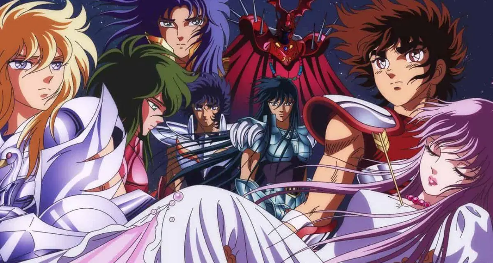

Ordem cronológica dos animes de Cavaleiros do Zodíaco
Postado por Gabriel Zoldick | set 6, 2023 |
Aproveitando que no último 1º de setembro se comemorou 29 anos da estreia do anime dos Cavaleiros do Zodíaco, vamos aqui falar a ordem cronológica da história.
Imagem: Toei Company
Os Cavaleiros do Zodíaco, também conhecido como Saint Seiya, é um popular anime dos anos 90 e sua exibição inicial aconteceu pela extinta Rede Manchete. Depois da estreia o anime passou a ganhar diversas outras temporadas e spin-offs que acrescentam em muito a mitologia da obra.
Entretanto, a mais conhecida das sagas, A Saga das Doze Casas, o anime possui uma linha cronológica que conta uma história muito maior que pensávamos. Então, confira aqui e descubra mais sobre a cronologia do anime Os Cavaleiros do Zodíaco.
Não iremos falar dos filmes, apenas das séries em anime.
Imagem: TMS Entertainment
Vamos começar por um que é polêmico, Saint Seiya: The Lost Canvas, pois originalmente está obra, tanto mangá, quanto anime, seriam canônicos, mas atualmente não é o caso. The Lost Canvas acontece 243 anos antes da obra clássica criada por Masami Kurumada. E contaria a história da Guerra Santa, entre a deusa Atena e Hades, durante o século 18.
E assim, neste anime acompanharemos a história de Tenma , o Cavaleiro de Pégaso nessa história, e igualmente como Seiya é um órfão que possui um forte ligação com Alone e Sasha, que viriam a se tornar os hospedeiros de Hades e Atena, respectivamente. Outra coisa interessante deste anime, é a presença de Dohko de Libra, o mestre do Shiryu, e Shion de Áries, antigo Mestre do Santuário e mestre de Mu.
A história de Saint Seiya: The Lost Canvas – Meiō Shinwa foi feita por Shiori Teshirogi em parceria com Masami Kurumada. Já o anime de Cavaleiros do Zodíaco possui apenas 26 episódios e sem um final. Os episódios de Os Cavaleiros do Zodíaco: The Lost Canvas – A Saga de Hades foram exibidos entre os anos de 2009 e 2011. Além disso, o mangá de Saint Seiya: The Lost Canvas – Meiō Shinwa foi um enorme sucesso na época, rendendo uma continuação chamada The Lost Canvas Gaiden. Ambas as obras foram publicadas no Brasil, pela editora JBC.

Imagem: Toei Company
O anime que todo mundo conhece e já ouviu falar, o clássico Os Cavaleiros do Zodíaco, o anime estreou no Japão em outubro de 1986. Mas, apenas chegou ao Brasil em setembro de 1994, 05 anos depois que seu último episódio foi ao ar. Desde a sua estreia, na Rede Manchete, o anime se mostrou um sucesso entre o público e sua dublagem ajudou a popularizar, ainda mais, pelo restante do país. O anime começa com sua primeira saga, a Saga do Santuário, que acabou sendo dividida em 03 arcos. Sendo eles: Guerra Galáctica, Os Cavaleiros de Prata e A Batalha das Doze Casas, a primeira e a última são as mais lembradas pelos fãs.
Imagem: Toei Company
Neste primeiro arco acompanhamos é onde somos apresentados aos protagonistas da série, Seiya, Shiryu, Hyoga, Shun e Ikki. Além claro, dos outros cinco Cavaleiros de Bronze que compõe o grupo, todos eles participam da Guerra Galáctica. Onde o vencedor ganharia a armadura de ouro de Sagitário. E é neste arco que ocorre a famosa luta entre Seiya e Shiryu, onde ambos lutam até a morte, sorte nossa que Seiya consegue trazer de volta o nosso querido Shiryu. Porém, tudo muda quando o Cavaleiro de Fênix retorna, se voltando contra seus companheiros e roubando a armadura de ouro. E assim, começa uma batalha para recuperar a armadura e derrotar o cavaleiro de Fênix.
Imagem: Toei Company
Após os eventos do arco anterior, o Santuário começa a enviar os Cavaleiros de Prata para derrotar os Cavaleiros de Bronze no Japão. Neste novo desafio, os Cavaleiros enfrentarão uma patente superior à deles e descobrirão sobre a existência da Deusa Atena. Além disso, neste arco surge os Cavaleiros de Aço que fizeram um sucesso no anime e que só existe na adaptação. Ao decorrer deste arco, também começam os questionamentos sobre o que está acontecendo no Santuário e porque decidiram entrar em guerra com os Cavaleiros de Bronze.
Imagem: Toei Company
O arco final da primeira Saga do anime e mangá dos Cavaleiros do Zodíaco, aqui vemos que Saori e os Cavaleiros de Bronze viajam até a Grécia, para falar com o Mestre do Santuário. Mas, antes mesmo de começarem a subir em direção a sala do Mestre, são atacados por Ptolemy de Sagita, que atinge Saori com uma flecha dourada. Cabe então, aos Cavaleiros subirem as 12 Casas do Zodíaco e salvar Saori, mas devem fazer isso em até 12 horas. Porém, as casas estão sendo defendidas pelos Cavaleiros de Ouro e alguns deles não os deixarão passar sem lutar. Aqui encontramos o clímax desta primeira saga e as respostas de todas as questões em aberto que o manteve em aberto.
Imagem: Toei Company
Esta saga é filler e seus acontecimentos não existem no mangá. Porém, os motivos dela existir é por conta que o anime já havia alcançado o mangá e precisavam esperar a Saga de Poseidon ser encerrada, para poder ser adaptada. A saga teve como base o filme Os Cavaleiros do Zodíaco: A Grande Batalha dos Deuses e o capítulo 46.5, do mangá.
Depois da batalha das 12 casas, Saori é atacada pelo Syd, o Guerreiro Deus de Mizar, dizendo que está seguindo as ordens de Hilda. Hilda é a representante de Odin, na Terra, com a missão de trazer paz a Asgard. Mas, após receber o Anel de Nibelungo de Poseidon, declara guerra contra a Deusa Atena.
Apesar de ser considerada, pelos fãs, como um dos melhores arco filler dos anime, A Saga da Batalha de Asgard viria ser um grande problema para o anime no futuro. Mas, mesmo assim, o resultado final trouxe uma grande melhora do que vemos no mangá, pós batalha das 12 casas.
Imagem: Toei Company
Bom, voltamos as adaptações do mangá e aqui a batalha contra um Deus que ainda não despertou. No anime, essa saga acontece logo após os eventos da Batalha de Asgard e Poseidon está querendo afundar o mundo. Mas, Atena não quer que isso aconteça e decide se sacrificar, para salvar o planeta.
Apesar disso, os Cavaleiros de Bronze decidem lutar contra Poseidon e seus Generais Marinas, então viajam até o Santuário de Poseidon, nas profundezas do Mar Mediterrâneo. E agora, os Cavaleiros devem derrotar os Marinas e Poseidon para salvar o planeta e a Deusa Atena. Além disso, o anime dos Cavaleiros do Zodíaco foi encerrado após esta saga, porém o mangá continuaria com a saga final, a Saga de Hades.
Imagem: Toei Company
Bom, voltamos as adaptações do mangá e aqui a batalha contra um Deus que ainda não despertou. No anime, essa saga acontece logo após os eventos da Batalha de Asgard e Poseidon está querendo afundar o mundo. Mas, Atena não quer que isso aconteça e decide se sacrificar, para salvar o planeta.
Apesar disso, os Cavaleiros de Bronze decidem lutar contra Poseidon e seus Generais Marinas, então viajam até o Santuário de Poseidon, nas profundezas do Mar Mediterrâneo. E agora, os Cavaleiros devem derrotar os Marinas e Poseidon para salvar o planeta e a Deusa Atena. Além disso, o anime dos Cavaleiros do Zodíaco foi encerrado após esta saga, porém o mangá continuaria com a saga final, a Saga de Hades.
Imagem: Toei Company
Este é o início da última saga de Cavaleiros do Zodíaco, esta parte tem o título de Santuário e traz os espectros ressuscitados pelo Deus Hades. O objetivo dos espectros é capturar a Deusa Atena e levar para Hades, assim o Deus conseguiria ganhar a Guerra Santa e dominar o mundo. Mas, para isso Hades ressuscita alguns dos Cavaleiros de Ouro e Prata que morreram no passado e com isso, ter uma vantagem contra os Cavaleiros sobreviventes. Resta agora aos Cavaleiros de Bronze proteger a Deusa Atena de Hades e salvar o mundo desta terrível guerra.
Os Cavaleiros do Zodíaco – Saga de Hades: Santuário contém 13 episódios, os episódios foram lançados em formato de DVD, entre os anos de 2002 e 2003.
Imagem: Toei Company
A continuação dos eventos da primeira parte, em 2005 chegava os episódios de Saga de Hades: Inferno. Apesar da demora no lançamento, os episódios são uma continuação direta do último episódio de Saga de Hades: Santuário. Após Seiya e Rhadamanthys caírem no Portal do Inferno, Hyoga, Shun e Shiryu decidem ir atrás do seu amigo. No Inferno, os Cavaleiros terão de enfrentar os Espectros de Hades, enquanto procuram Atena para entregar sua armadura. Mas, alguma coisa parece estar errada com Shun.
Igualmente a Saga de Hades: Santuário, os episódios dessa segunda parte também tiveram seu lançamento em DVD. Porém, levou quase 02 anos para todos os episódios serem lançados, entre os anos de 2005 e 2007. Os Cavaleiros do Zodíaco – Saga de Hades: Inferno contém 12 episódios.
Imagem: Toei Company
A última parte da saga de Hades, após o sacrifício dos Cavaleiros de Ouro para destruir o Muro das Lamentações, Os Cavaleiros de Bronze se dirigem aos Campos Elíseos. Este é um local onde apenas os Deuses têm permissão de entrar e permanecer e aqui eles conhecem os Deuses Thanatos e Hypnos, o Deus da Morte e do Sono. Agora, restando pouco tempo, para salvar Atena e entregar sua armadura, os Cavaleiros devem derrotar Thanatos e Hypnos para prosseguir com sua missão. Nesta parte, temos um vislumbre de Ikki e Shun usando as armaduras de ouro de Leão e Virgem, respectivamente. Além claro, do surgimento das Armaduras Divina dos Cavaleiros de Bronze.
Bem como as partes anteriores, os episódios de Os Cavaleiros do Zodíaco – Saga de Hades: Campos Elíseos foram lançados em DVD, levando em torno de 01 ano para disponibilizar todos os episódios. A Saga de Hades: Campos Elíseos possui 06 episódios.
Imagem: Toei Company
Um dos primeiros spin-offs de Cavaleiros do Zodíaco e, provavelmente, o anime que salvou a franquia dos Cavaleiros, no Japão. Apesar de não ser oficialmente canônico, ele se passa 25 anos depois da Guerra Santa do século 20, a Saga de Hades que se encontra acima. O anime veio logo após o fracasso de Saint Seiya: Lost Canvas e era a última chance do Cavaleiros do Zodíaco, havia muita pressão aqui.
Na história acompanhamos uma nova geração de Cavaleiros, depois que Seiya, agora Cavaleiro de Ouro de Sagitário, e os outros Cavaleiros entraram em conflito com o Deus Marte, eles acabaram sendo impedidos de queimar o Cosmo e Atena teve de se exilar numa ilha. Em seu exílio, Atena cuida de Kouga, um jovem com um passado misterioso, que vem sendo treinado por Shina, para que ele se torne um Cavaleiro de Atena. Porém, Marte tem um plano parecido, onde ele cria uma jovem com um forte Cosmo e assim, usurpar o lugar de Atena no Santuário.
Saint Seiya: Ômega se tornou um enorme sucesso entre o público japonês e isso garantiu uma segunda temporada do anime. Além de manter a mitologia, criada por Kurumada, ampliaram colocando alguns elementos que próprio sempre desejou em sua obra. Saint Seiya: Ômega possui 97 episódios.
Imagem: Toei Company
Este anime é ligação direta com o final de Saga de Hades: Inferno, após o sacrifício para destruir o Muro das Lamentações, Aiolia acorda em Asgard e não entende o que está acontecendo. Ao decorrer dos episódios, descobrimos que todos os 12 Cavaleiros de Ouro foram revividos e agora devem enfrentar uma nova ameaça. Cronologicamente, este anime se passa entre a parte 2 e 3 da Saga de Hades, porém, ficou popularmente conhecida como o anime para vender brinquedo. Apesar de possuir apenas 13 episódios, existem muitas críticas negativas quanto esse anime e o motivo dele ter sido produzido.
Imagem: Toei Company
Até o presente momento, o último anime produzido da franquia e que é a adaptação do mangá Saint Seiya: Saintia Sho, ou só Saintia Sho. Aqui temos a apresentação de uma nova classe de cavaleiros de Atena, as Saintias, que são a Guarda pessoal de proteção à Atena e as únicas entre as Amazonas a não usar máscaras. Sendo vistas, apenas, protegendo a Deusa, por isso acabaram sendo consideradas lendas para os outros Cavaleiros. Na história, acompanhamos Shoko, a Saintia de Cavalo Menor, e a batalha entre a Deusa Atena e a Deusa da discórdia, Éris. Apesar disso, a história se passa em paralelo a primeira saga do mangá clássico, Saint Seiya, durante a Saga do Santuário. Por enquanto, o anime de Saintia Shô possui apenas 1 temporada, com 10 episódios e sem planos para o lançamento de uma segunda.
Esta é a ordem cronológica dos animes de Cavaleiros do Zodíaco, espero que ajude a vocês entenderem como é linha do tempo do anime. Além disso, todos os animes citados se encontram disponíveis na plataforma da Crunchyroll.